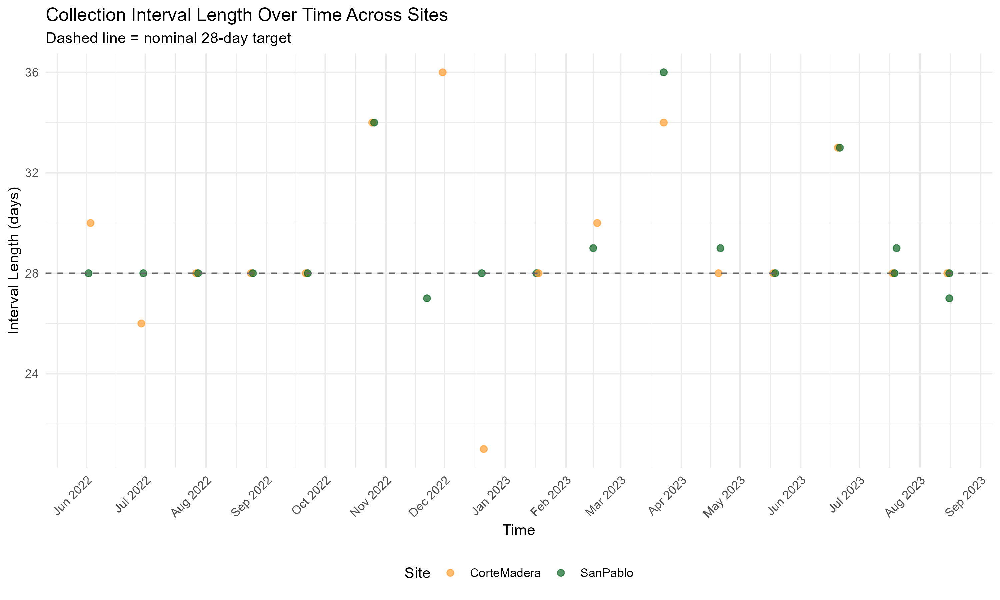
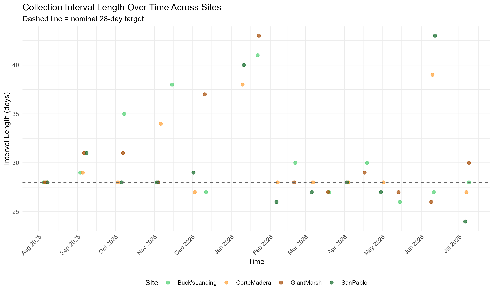
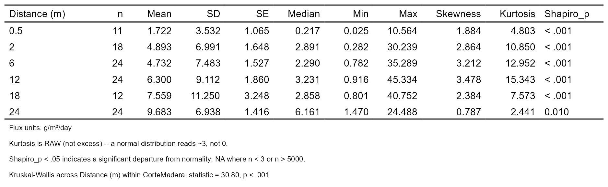

| title: “Figures List (Draft)” |
| format: docx |
| editor: visual |
1. Introduction
2. Methods
2.1 Study Sites
Figure 1. General Study Site

Figure 2. General Study Site with Elevation Survey Benchmarks Included

2.2 Marsh Edge Typology
2.3 Sediment Deposition Collections throughout the Year
Figure 3. Transect Layout of Study Design With Ramped and Scarped Edges

Figure 4. Deployment Length within Study Period (2022-2023)

Figure 5. Deployment Length within Study Period (2025-2026)

2.4 RTK Elevation Measurements for Horizontal Marsh Edge Profiles of 2025-2026 Study
Figure 6. Elevation Profiles of Scarped Edges Sites-Giant Marsh and Corte Madera 
Figure 7. Elevation Profiles of Ramped Edges Sites-Buck’s Landing and San Pablo 
3. Analysis
4. Results
4.1 Sediment Deposition Across Ramped and Scarped Marsh Edges
Marsh Edge Typology Level
Table 1. GLMM of Sediment Deposition Across Marsh Edge Types 
Site Level
Figure 8. Sediment Deposition (Flux) Across Site Level of Ramped and Scarped Sites (2025-2026) 
Table 2. Statistical Table of Sediment Deposition (Flux) Across Site (2025-2026) 
Tran-Site Level
Figure 9. Sediment Deposition (Flux) Across Transect Nested in Site Level of Ramped and Scarped Sites (2025-2026) 
Table 3. GLMM of Sediment Deposition Across Transect Nested in Site Level of Ramped and Scarped Sites (2025-2026) 
Z star level per site
Figure 10. Sediment Deposition (Flux) Across z* (Relative Elevation) Within Ramped and Scarped Sites (2025-2026) 
Table 4. GLMM of Sediment Deposition Across z* (Relative Elevation) Within Ramped and Scarped Sites (2025-2026) 
Distance Level Per Site
Figure 11. Sediment Deposition (Flux) Across Distances from Marsh Edge Within Ramped and Scarped Sites (2025-2026) 
Table 5. Statistical Table of Sediment Deposition (Flux) Across Distances within Giant Marsh Site (2025-2026) 
Table 6. Statistical Table of Sediment Deposition (Flux) Across Distances within Corte Madera Site (2025-2026) 
Table 7. Statistical Table of Sediment Deposition (Flux) Across Distances within San Pablo Site (2025-2026) 
Table 8. Statistical Table of Sediment Deposition (Flux) Across Distances within Buck’s Landing Site (2025-2026) 
Temporally
Figure 12. Sediment Deposition (Flux) Across July 2025 -October 2025 Within Ramped and Scarped Sites 
Figure 13. Sediment Deposition (Flux) Across November 2025 -February 2026 Within Ramped and Scarped Sites 
Figure 14. Sediment Deposition (Flux) Across March 2026 -June 2026 Within Ramped and Scarped Sites 
Table 9. Statistical Table of Sediment Deposition (Flux) Across Study Phase Collections (M#) within Corte Madera (2025-2026) 
Table 10. Statistical Table of Sediment Deposition (Flux) Across Study Phase Collections (M#) within Buck’s Landing (2025-2026) 
Table 11. Statistical Table of Sediment Deposition (Flux) Across Study Phase Collections (M#) within San Pablo (2025-2026) 
Table 12. Statistical Table of Sediment Deposition (Flux) Across Study Phase Collections (M#) within Giant Marsh (2025-2026) 
Table 13. GLMM of Sediment Deposition (Flux) Across Summer (March-October) and Winter (November-February) Seasons Between Sites (2025-2026)

4.2 Sediment Deposition Rates Across Years in One Ramped and One Scarped Edge Marsh
Study Dataset Comparison Across Ramped (San Pablo Marsh) and Scarped Edge (Corte Madera Marsh) Sites
Figure 15. Sediment Deposition (Flux) Across Study Datasets of 2022/2023 vs. 2025/2026 within Corte Madera and San Pablo Sites

Table 14. Statistical Table of Sediment Deposition (Flux) Across Study Datasets of 2022/2023 vs. 2025/2026 within Corte Madera and San Pablo Sites

Spatially
Figure 16. Sediment Deposition (Flux) Across Distances from Marsh Edge Within Between 2022/2023 vs. 2025/2026 in Corte Madera and San Pablo Sites

Table 15.Statistical Table of Sediment Deposition (Flux) Across Distances within Corte Madera Site (2022-2023)

Table 16. Statistical Table of Sediment Deposition (Flux) Across Distances within Corte Madera Site (2025-2026)

Table 17. Statistical Table of Sediment Deposition (Flux) Across Distances within San Pablo Site (2022-2023)

Table 18. Statistical Table of Sediment Deposition (Flux) Across Distances within Corte Madera Site (2025-2026)

Figure 18. Sediment Deposition (Flux) Across z (Relative Elevation) Across Study Datasets 2022/2023 vs. 2025/2026

Temporally
Figure 19. Sediment Deposition (Flux) Between Study Datasets of 2022/2023 vs. 2025/2026 Across July through October Within Corte Madera and San Pablo Sites

Figure 20. Sediment Deposition (Flux) Between Study Datasets of 2022/2023 vs. 2025/2026 Across November through March Within Corte Madera and San Pablo Sites

Figure 21. Sediment Deposition (Flux) Between Study Datasets of 2022/2023 vs. 2025/2026 Across March through June Within Corte Madera and San Pablo Sites

Table 19. Statistical Table of Sediment Deposition (Flux) Across Study Phase Collections (M#) within Corte Madera (2022-2023)

Table 20. Statistical Table of Sediment Deposition (Flux) Across Study Phase Collections (M#) within Corte Madera (2025-2026)

Table 21. Statistical Table of Sediment Deposition (Flux) Across Study Phase Collections (M#) within San Pablo (2022-2023)

Table 22. Statistical Table of Sediment Deposition (Flux) Across Study Phase Collections (M#) within San Pablo (2025-2026)

4.3 Sediment Deposition in Relation to Intra-Marsh Geomorphic Factors
Intra-Marsh Geomorphic Factor Comparison
Figure 22. Least Absolute Shrinkage and Selection Operator (LASSO) Regression Model of Intra-Marsh Geomorphic Variables

Elevation and Distance from Marsh Edge
Figure 23. Comparing Average Flux and Variability Across Distance from Marsh Edge and z star

Figure 24. Variance Across Time and Space Between and Across Sites of Sediment Deposition (Flux)

Figure 25. Sediment Deposition (Flux) Across z star profiles Across Marsh Sites

Figure 26. Sediment Deposition (Flux) Across Distance Over Study Collections Between Sites

Figure 27. Corte Madera Site Case Study of Sediment Deposition (Flux) Across Distance from Marsh Edge Across Study Collections Between 2022/2023 vs. 2025/2026